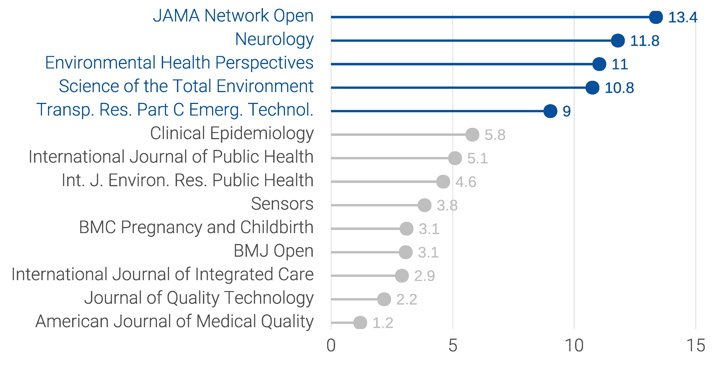
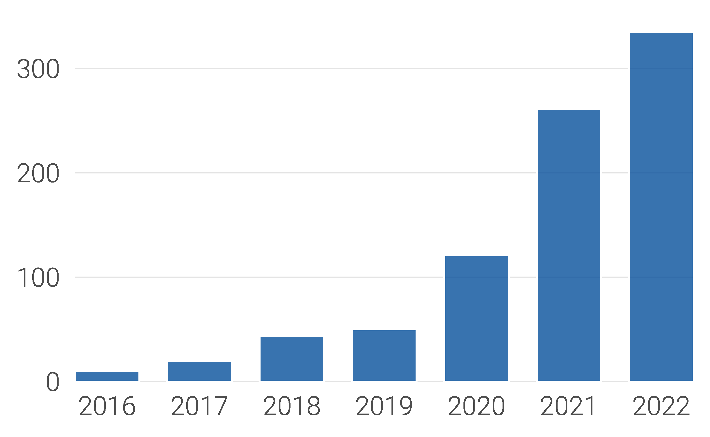

Publications
以第一作者身份发表于JAMA Network Open, Neurology, Environmental Health Perspectives等14种杂志。


Selected publications
2022
Cai, M., Li, H., Wu, Y., Zhang. S., Wang. X., Zhang. Z., Lin. H.* (2022) Ambient Air Pollution Associated with Body Fat Percentages at Different Body Compartments: A Cohort Study of UK Biobank Participants. Environmental Health Perspectives. 130(6): 067702. DOI: 10.1289/EHP10920
Cai, M., Zhang, S., Lin, X., Qian, Z., McMillin, S.E., Yang, Y., Zhang, Z., Pan, J., Lin, H.. (2022) Association of ambient particulate matter pollution of different sizes with in-hospital case fatality among stroke patients in China. Neurology. 98(4), e2474-e2486. DOI: 10.1212/WNL.0000000000200546
Cai, M., Lin, X., Wang, X., Zhang, S., Qian, Z., McMillin, S.E., Aaron, H.E., Lin, H., Wei, J., Zhang, Z., Pan, J. (2022) Ambient particulate matter pollution of different sizes associated with recurrent stroke hospitalization in China: a cohort study of 1.07 million stroke patients. Science of the Total Environment. 159104. DOI: 10.1016/j.scitotenv.2022.159104
Cai, M., Liu, E., Bai, P., Zhang, N., Wang, S., Li, W., Lin, H., Lin, X.∗. (2022) “The Chasm in Percutaneous Coronary Intervention and In-hospital Mortality Rates among Acute Myocardial Infarction Patients in Rural and Urban Hospitals in China: A Mediation Analysis”, International Journal of Public Health. DOI: 10.3389/ijph.2022.1604846
Cai, M., Mehdizadeh, A., Hu, Q., Alamdar Yazdi, M., Vinel, A., Davis, K., Megahed, F., Rigdon, S. (2022) Hierarchical Point Process Models for Recurring Safety Critical Events Involving Commercial Truck Drivers: A Reliability Framework for Human Performance Modeling. Journal of Quality Technology. 54(4): 466-484. DOI: 10.1080/00224065.2021.1939815
2021
Cai, M., Xie, Y., Bowe, B., Yan, Y., Al-Aly, Z. (2021) Temporal Trends in Incidence Rates of Lower Extremity Amputation and Associated Risk Factors Among Patients Using Veterans Health Administration Services From 2008 to 2018. JAMA Network Open. 4(1), e2033953-e2033953. DOI: 10.1001/jamanetworkopen.2020.33953
Cai, M., Alamdar Yazdi, M., Hu, Q., Mehdizadeh, A., Vinel, A., Davis, K.C., Megahed, F.M., Rigdon, S.E. (2021) The association between crashes and safety-critical events: synthesized evidence from crash reports and naturalistic driving data among commercial truck drivers. Transportation Research Part C: Emerging Technologies. 126(5): 103016. DOI: 10.1016/j.trc.2021.103016
Cai, M., Bowe, B., Xie, Y., Al-Aly, Z.∗. (2021) “Temporal Trends in COVID-19 Mortality: A Report from the US Department of Veteran Affairs”, BMJ Open. 11(8), 1-10. DOI: 10.1136/bmjopen-2020-047369
Cai, M., Zhang, B., Yang, R., Zheng, T., Dong, G., Lin, H., Rigdon, S., Xian, H., Hinyard, L., Xaverius, P., Burroughs, T., Liu, E., Jansson, D., Yang, S., Qian, Z. (2021) “Association between maternal outdoor physical exercise and the risk of preterm birth: a case-control study in Wuhan, China. BMC Pregnancy and Childbirth. 21(1), 1-9. DOI: 10.1186/s12884-021-03678-9
2020 and before
Cai, M., Liu, E., Zhang, R., Lin, X., Rigdon, S.E., Qian, Z., Belue, R., Chang, J.J. (2020) “Comparing the Performance of Charlson and Elixhauser Comorbidity Indices to Predict In-Hospital Mortality Among a Chinese Population”, Clinical Epidemiology. 12, 307–316. DOI: 10.2147/CLEP.S241610
Cai, M., Liu, E., Li, W. (2018). “Rural Versus Urban Patients: Benchmarking the Outcomes of Patients with Acute Myocardial Infarction in Shanxi, China from 2013 to 2017”, International Journal of Environmental Research and Public Health. 15(9), 1-16. DOI: 10.3390/ijerph15091930
Cai, M., Liu, E., Tao, H., Qian, Z., Fu, Q., Lin, X., Wang, M., Xu, C., Ni, Z. (2018). Does A Medical Consortium Influence Health Outcomes of Hospitalized Cancer Patients? An Integrated Care Model in Shanxi, China, International Journal of Integrated Care. 18(2), 1-10. DOI: 10.5334/ijic.3588
Cai, M., Liu, E., Tao, H., Qian, Z., Lin, X., Cheng, Z. (2018). Does Level of Hospital Matter? A Study of Mortality of Acute Myocardial Infarction Patients in Shanxi, China. American Journal of Medical Quality. 33(2), 185-192. DOI: 10.1177/1062860617708608